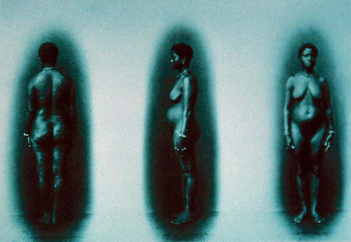

|
|  |
| Augusto Stahl, Black female in front, profile and rear
view |
Photographs of "natives" taken for scientific purposes are particularly
eloquent documents of the ambiguous nature of the photographic real,
and the way it is always invested with power, desire and agency, both
in terms of who takes and consumes pictures, and of who has their
picture taken. Augusto Stahl, a German immigrant working in Brazil, was
hired in 1865 by the Swiss naturalist (and Harvard professor) Louis
Agassiz, to take a series of pictures of "racial types", taking
advantage of the wide variety available in the country (on record are
photographs of a Chinese and an Afro-Brazilian male, as well as the
above image). Stahl proceeded to hire inhabitants of Rio de Janeiro to
pose in the nude in his studio, in similar poses so as to be able to
compare "racial traits" between one image and the next. Agassiz aimed
to use Stahl's picture to prove his notion of the different biological
ancestries of "races" - each individual was supposed to be a
"representative sample" of their "race". The authority of photographic
"truth", then, was invoked here as a means to consolidate scientific
racism - precisely by stripping (literally) the image of all contextual
references to the sitters' position in society and to the studio
context in which the portraits were taken, a timeless and presumably
self-evident image of "race" was being manufactured.

|